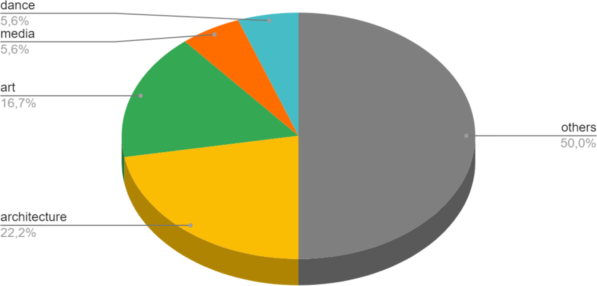
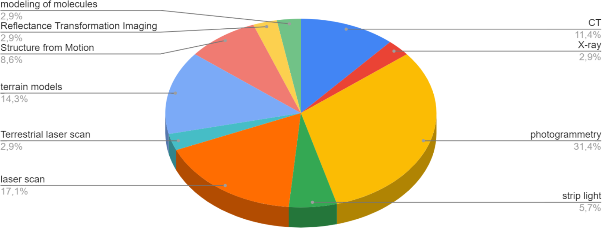
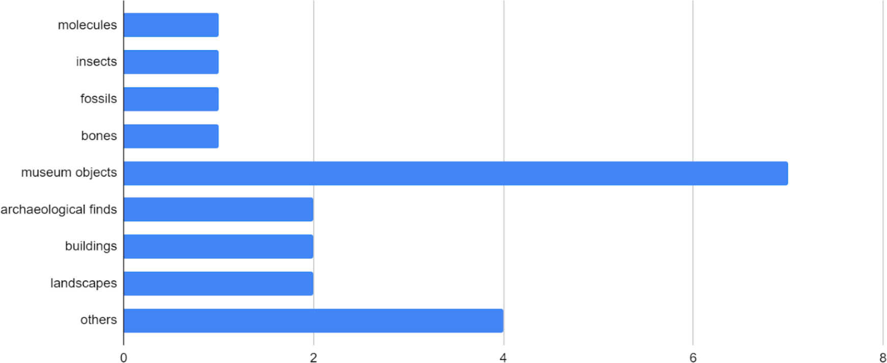
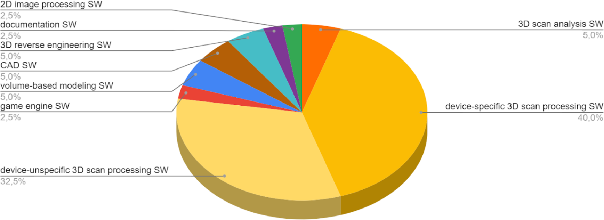
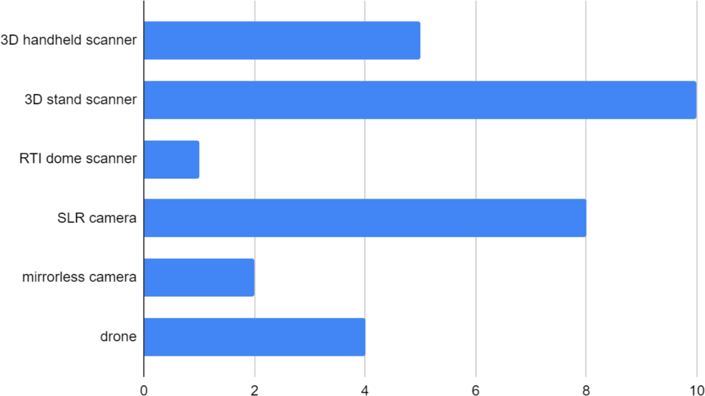
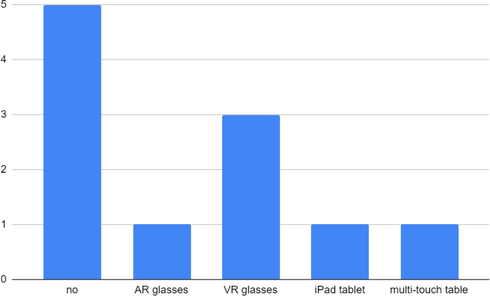
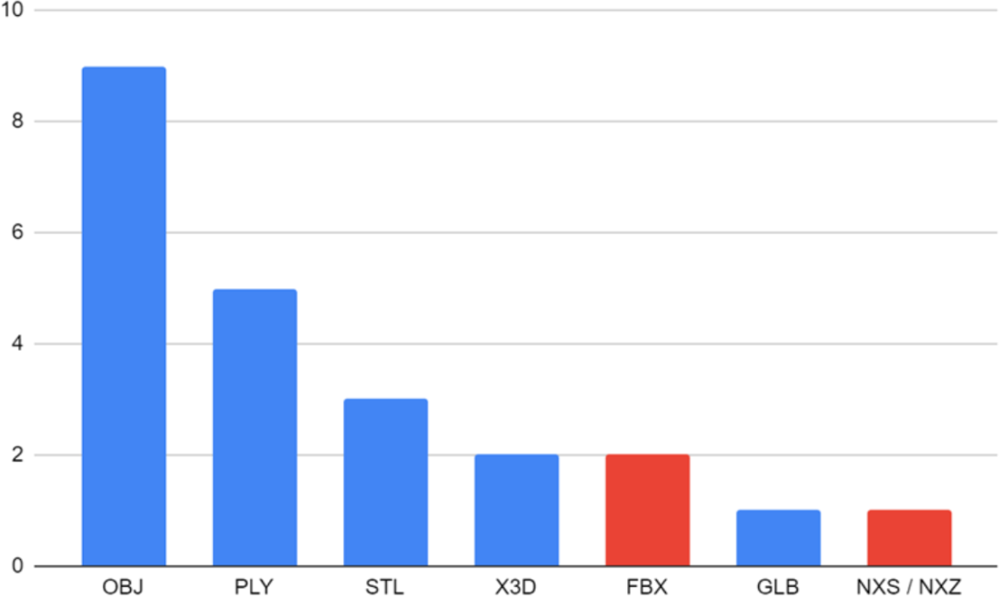
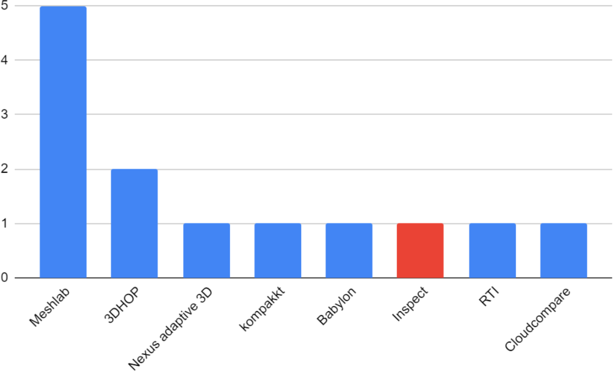

Erstellung, Nutzung und Handhabung von 3D-Modellen – Umfrageergebnisse aus der NFDI4Culture Community
von Jörg Heseler, Matthias Arnold, Alexandra Büttner, und Simon Worthington
v1.0
Herausgegeben von: Arbeitsgruppe „Digitale Publikationen und Daten“ (NFDI4Culture)
Zuletzt aktualisiert: 2023-10-05
Erstellt: 2023-10-04
Sprache: German (Germany)
Erstellt von: Simon Worthington
Impressum
Veröffentlicht in Deutschland
Datum: Juni 2023
NFDI4Culture – Konsortium für Forschungsdaten zum materiellen und immateriellen Kulturerbe NFDI4Culture ist ein Konsortium innerhalb der deutschen Nationalen Forschungsdateninfrastruktur (NFDI).
Herausgegeben von der Arbeitsgruppe „Digitale Publikationen und Daten“ (NFDI4Culture).
Inter. Das Inter-Projekt wird von Rasmus Andersson geleitet, einem schwedischen Softwarehersteller, der in San Francisco lebt. https://github.com/rsms/inter/
Danksagung
Die Autoren möchten auch den folgenden Kollegen für ihre hilfreichen Kommentare danken (in alphabetischer Reihenfolge): Eva Bodenschatz und Sabrina Herzog.
Eines der Projektziele von NFDI4Culture und speziell der Task Area Data Publication and Availability (TA4) ist die Entwicklung von Konzepten für zentrale Langzeitarchivierungsdienste zur Sicherstellung einer nachhaltigen Infrastruktur. Dabei stehen insbesondere Publikationen aus kulturellen Disziplinen mit 3D-Daten im Vordergrund. Die Entwicklung solcher Konzepte setzt die Kenntnis der Bedürfnisse der Produzierenden, Anbietenden und Verwaltenden von Forschungsdaten voraus. Zur Bedarfsermittlung wurde eine Umfrage zur Erstellung, Nutzung und Handhabung von 3D-Modellen durchgeführt, deren Ergebnisse im Folgenden diskutiert werden.
Heseler, Jörg; Arnold, Matthias; Büttner, Alexandra; und Worthington, Simon. 2023. 'Erstellung, Nutzung und Handhabung von 3D-Modellen – Umfrageergebnisse aus der NFDI4Culture Community'. Arbeitsgruppe Digitale Publikationen und Daten (NFDI4Culture). https://doi.org/10.5281/zenodo.8033536.
Ergebnisse der Umfrage Enhanced Publication
Die Umfrage wurde vor und während des NFDI4Culture-Forums „3D-Objekte: Digitalisierung, Präsentation und Langzeitarchivierung“ im Mai 2022 per E-Mail in Form eines NextCloud-Formulars verschickt. Das Hauptziel war, die von der Community im Bereich 3D verwendeten Dateiformate und Metadatenschemata zu ermitteln. Um ein besseres Verständnis der technischen Aspekte des Digitalisierungsprozesses zu erhalten, fragten wir speziell nach der Verwendung von Software und Hardware für die Erfassung und Digitalisierung von 3D-Objekten.

AbbildungWelcher Disziplin würden Sie sich selbst zuordnen?
Der Vergleich von Ansätzen zur 3D-Digitalisierung in verschiedenen Bereichen kann helfen, die Community-spezifischen Anwendungsszenarien, Bedürfnisse oder Vorurteile innerhalb von Fachgebieten zu erkennen. Von den 20 an der Umfrage Teilnehmenden ordneten sich die meisten Disziplinen außerhalb des Kulturerbesektors zu; innerhalb dessen jedoch waren Architektur und Kunst die größten Fächergruppen, gefolgt von Tanz- und Medienwissenschaften.

AbbildungWelche Methoden verwenden Sie, um 3D-Objekte zu digitalisieren?
Die häufigsten Antworten auf die Frage nach den Digitalisierungsmethoden waren Fotogrammetrie, Laserscanning, CT und Röntgen. Dass die 20 Teilnehmenden insgesamt zehn verschiedene Methoden anwenden, weist auf die Vielzahl der angewandten Methoden hin. Neue Anregungen für uns waren zudem etwa Structure-from-Motion, Strip-lighting und Reflectance Transformation Imaging (RTI).

AbbildungWas digitalisieren Sie?
Bezeichnend war auch die große Vielfalt der zu digitalisierenden Objekte in Bezug auf Größe, Material und Oberflächenstruktur. Die Mehrheit der Teilnehmenden nannte Museumsobjekte, von Töpferwaren bis zu Skulpturen aus verschiedenen Materialien wie etwa Keramik oder Metall. Die Antworten umfassten auch sehr kleine Objekte wie Insekten, Fossilien oder auch Knochen, für die hauptsächlich CT-/Röntgenverfahren verwendet wurden. Auch sehr große Objekte wie Gebäude und Landschaften wurden genannt, die meist mit Stand-up-Laserscannern oder Drohnen mit Fotogrammetrieverfahren erfasst wurden.
Auf die Frage nach den zur Beschreibung der physischen und digitalen Objekte verwendeten Metadatenschemata, wurde das für 3D-Daten übliche LIDO genannt, oder auch einfach XML entweder mit Dublin Core oder mit eigenem Vokabular. Neuere Metadatenschemata wie XMP oder CARARE wurden nicht erwähnt. Ein Teilnehmer gab an, mit dem Begriff Metadatenschema nicht vertraut zu sein. Die Digitalisierung von Objekten des kulturellen Erbes erfordert immer die Zusammenarbeit mehrerer Akteure und Arbeitsschritte, die unterschiedliche Fachkenntnisse und Vorkenntnisse voraussetzen. Daher ist die Bereitstellung nachvollziehbarer Erklärungen für Fachbegriffe von entscheidender Bedeutung, um eine gemeinsame Grundlage für Diskussionen und den Wissensaustausch zwischen den verschiedenen Akteuren des kulturellen Erbes zu schaffen. Bemerkenswert ist, dass mehr als die Hälfte der Befragten angaben, überhaupt keine Metadatenschemata zu verwenden. Hier bedarf es einer Klärung, inwieweit die gängigen Schemata für 3D-Daten unzureichend oder ungeeignet waren oder sind.

AbbildungWelche Software (SW) verwenden Sie, um 3D-Objekte zu digitalisieren?
Auf die 3D-Digitalisierungssoftware bezugnehmend nannte eine deutliche Mehrheit 3D-Scan-Verarbeitungssoftware für Punktwolken oder Fotos, wie die beiden gelben Bereiche im obigen Kuchendiagramm zusammen zeigen. Die Hälfte der 3D-Scan-Verarbeitungssoftware war jedoch geräte- und herstellerspezifisch. Software für die 3D-Scan-Analyse, 3D-Modellierung oder Projektdokumentation wurde dagegen weniger häufig genannt.

AbbildungWelche Hardware verwenden Sie zur Erfassung von 3D-Objekten?
Die Hardware für die Digitalisierung von 3D-Objekten betreffend erwähnten die Teilnehmenden den Einsatz von Handscannern, die u. a. mit Streifenlicht- oder Laserscanning-Methoden arbeiten, vor allem für die Erfassung kleiner bis mittelgroßer Objekte. Standscanner, die mit Laserlicht arbeiten, wurden vor allem für mittelgroße bis große Objekte eingesetzt. Spiegelreflex- und spiegellose Kameras wurden ebenfalls zur Erfassung kleiner bis mittelgroßer Objekte eingesetzt, entweder zur Berechnung von 3D-Modellen mit fotogrammetrischen Verfahren oder zur Erstellung einfacher 2D-Bilder aus verschiedenen Perspektiven. Zur Erfassung von Gebäuden und Landschaften wurde der Einsatz von Drohnen genannt. Darüber hinaus erwähnte ein Befragter einen RTI-Kuppelscanner (Reflectance Transformation Imaging).

AbbildungVerwenden Sie spezielle Hardware, um Ihre 3D-Daten anzuzeigen?
Während die Mehrheit der Teilnehmenden offenbar keine speziellen Geräte für die Anzeige von 3D-Daten verwendet, nannten die Übrigen am häufigsten VR-Brillen (Virtual Reality), darunter die Brillen Oculus Rift, HTC Vive und Hololens AR (Augmented Reality). Ein iPad-Tablet und ein MultiTouch-Tisch wurden ebenfalls einmal genannt.

AbbildungMit welchen 3D-Formaten arbeiten Sie für die Digitalisierung, Präsentation oder digitale Langzeitarchivierung?
Die wichtigste Frage in der Umfrage zur digitalen Langzeitarchivierung war, welche 3D-Formate die Community für verschiedene Anwendungsszenarien, wie Digitalisierung, Präsentation und Erhaltung, verwendet. Wavefront OBJ wurde am häufigsten genannt, gefolgt von Stanford Polygon (PLY) und Stereolithographie (STL). Das STL-Format ist nicht in der Lage, Farbinformationen zu speichern und wird eher im Zusammenhang mit dem 3D-Druck verwendet. Von den genannten Formaten sind nur die beiden in der obigen Abbildung rot dargestellten Formate, Filmbox (FBX) und Nexus (NXS oder NXZ), für die digitale Langzeitarchivierung nicht geeignet. Filmbox (FBX) ist ein proprietäres, nicht offenes Format, was bedeutet, dass es keine offen zugängliche Formatspezifikation gibt, die die genaue Struktur einer FBX-Datei beschreibt. Sollte dieses Format in Zukunft keine breite Anwendung mehr finden, werden Langzeitarchive möglicherweise nicht in der Lage sein, eigene Tools zum Rendern oder Konvertieren von FBX-Dateien zu entwickeln. Im Falle von Nexus ist die Verbreitung zu gering, um sicherzustellen, dass es auch in 20 Jahren noch Tools gibt, die dieses Format darstellen können.

AbbildungVerwenden Sie eine spezielle Software zur Darstellung Ihrer 3D-Daten?
Abschließend stellten wir die Frage, welche Software zur Darstellung von 3D-Daten verwendet wird. Hier wurde Meshlab am häufigsten genannt. Weitere Antworten betrafen browserbasierte Tools wie den 3DHOP-Viewer, der auf dem Nexus adaptive 3D-Viewer basiert, und den kompakkt-Viewer, der wiederum auf dem Babylon-Viewer bzw. dem Babylon.js-Framework basiert. Alle in der obigen Abbildung gezeigten Viewer sind quelloffen; nur der in Rot dargestellte GOM Inspect ist proprietär, d. h. nicht offen.
Schlussfolgerung und Ausblick
Diese Umfrage eröffnete uns einen Einblick in die von der Community verwendeten Formate, Geräte und Software. Eine Folgeumfrage wird die Ergebnisse einbeziehen und langfristige Archivierungszwecke und 3D-bezogene Anwendungsfälle für unsere Community ermitteln. Zu diesem Zweck sollten mehr als die 20 hier einbezogenen Teilnehmenden erreicht werden, um verallgemeinernde Schlussfolgerungen ziehen zu können. Auf Grundlage dieser und der folgenden Umfrageergebnisse wird dann ein Leitfaden für die digitale Langzeitarchivierung von 3D-Kulturerbeobjekten erstellt werden.
Anhang
Umfragedaten
Quelldaten der Umfrage (anonymisiert) als XLSX-, ODS- oder CSV-Tabelle, die auf GitHub gespeichert ist.